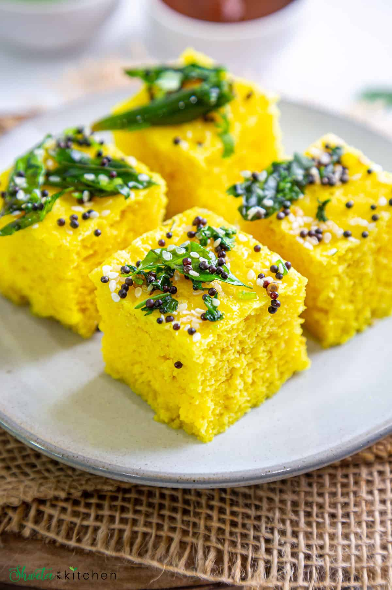

Dhokla Recipe
Steps To Make Dhokla
- In a large bowl, whisk together the besan, suji, turmeric powder, salt, and sugar.
- Add the oil, ginger paste, chili paste, and half of the water. Whisk until completely smooth and free of lumps.
- Add the lemon juice and stir well. The batter should have the consistency of a thick, pourable cake batter.
- Grease a deep round or square cake tin (or flat dhokla plates) lightly with oil.
- Fill a steamer or a large, wide pot with about 2 inches of water and bring it to a rolling boil over medium heat.
- Right before pouring the batter into the greased pan, add the Eno fruit salt into the batter and quickly pour 1 tsp of water over it
- Whisk gently in one direction for 30–60 seconds until the batter becomes frothy, light, and doubles in volume.
- Immediately pour the frothy batter into the greased tin and place it on a steamer stand inside your pot.
- Insert a knife or toothpick in the center; if it comes out clean, it is done. Let it cool slightly before removing
- Top with finely chopped coriander leaves and grated fresh coconut. Serve with green mint-coriander chutney.

Back to home page
Dosa Recipe
Samosa Recipe